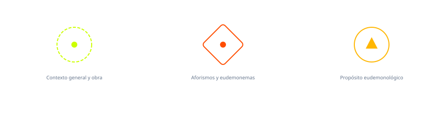

Análisis intencion del autor

El arte de ser feliz se organiza como un sistema estratégico y defensivo, a diferencia de otros textos que vienen a ser tratados metafísicos, este texto no explica ni el funcionamiento del universo, ni del mundo, ni del ser. No, lo que ofrece es un manual táctico para que el individuo pueda convivir consigo mismo. El contexto de esta obra sostiene que la convicción de que la vida, por su propia naturaleza, tiende al sufrimiento, por lo tanto, la felicidad es un concepto que debe redefinirse desde su propia raíz. El texto propone un equilibrio. La vida es inestable y el objetivo de la obra es proporcionar bases y cimientos necesarias para que el individuo mantenga su integridad y compostura frente al mundo exterior y su hostilidad. Eh, la obra se descompone en 50 reglas llamados eudemonemas. Esta estructura es fundamental. Al presentar el conocimiento en pequeños textos, eh su asimilación es mucho más fácil. Cada texto funciona como un consejo casi clínico. Por ejemplo, cuando el autor puede analizar la relación con los demás, no lo hace haciendo un tratado de ética social, ni lo hace con un fin de volverse un sociólogo. No, lo que hace es que reduce la interacción humana a una regla que preserva la distancia. Esto ya lo vimos en la estructura simbólica mediante el dilema del erizo. Por lo tanto, una serie de intervenciones directas sobre la conducta del ser, donde cada sentencia es un ejercicio donde se quitan los mitos, es lo que rige a esta obra. Sobre la intención comunicativa podemos concluir que el propósito eudemonológico de este texto es, en esencia, el poder administrar el bienestar del ser a través de quitar y no de poner, porque Schopenhauer se da cuenta de que poner en el individuo solo conlleva más complejidad y en un ser complejo que no se puede entender ni a sí mismo, esto es fundamental. Primero, lo hace mediante tres conceptos. Primero, la reducción de la esperanza. El autor busca que el lector abandone la esperanza, porque mientras todo el mundo en Europa del siglo XIX decía que la esperanza era lo último que se perdía, él difiere. Él difiere ya que eh la esperanza la ve como una forma para que nos lleva a la decepción. Precisamente esto a Schopenhauer no le parece. Su intención es convencer al lector de que si se espera menos, se sufre menos. El propósito es convertir al lector en un ser autosuficiente, que pueda sobrevivir por sí mismo, que no dependa de factores externos como fortuna, fama, eh amor o distintas cosas que el ser siempre busca. La intención última del autor es curar al lector de su propia vanidad. Schopenhauer se da cuenta de que el ser humano es vanidoso de por sí. Busca que el sujeto comprenda que su sufrimiento viene de querer ser alguien ante los ojos de los demás, pero que al mundo no le importa. Al mundo no le importa quién eres, al mundo no le importa qué das, porque ante el mundo nunca vas a ser suficiente, nos dice Schopenhauer. Y su propósito es redirigir esa energía hacia el cultivo del propio ser. Claramente, esto es solamente una postura filosófica y puede mucha gente diferir sobre esto, pero esto es lo que nos dice la obra. En resumen, la intención comunicativa de este escrito, mejor dicho, recopilación de eudemonemas, es transformar al lector en el controlador de su propia vida, alguien que ve la felicidad no como un estado de euforia, sino como imperturbabilidad que se obtiene tras renunciar a las ilusiones que encadenan el alma.